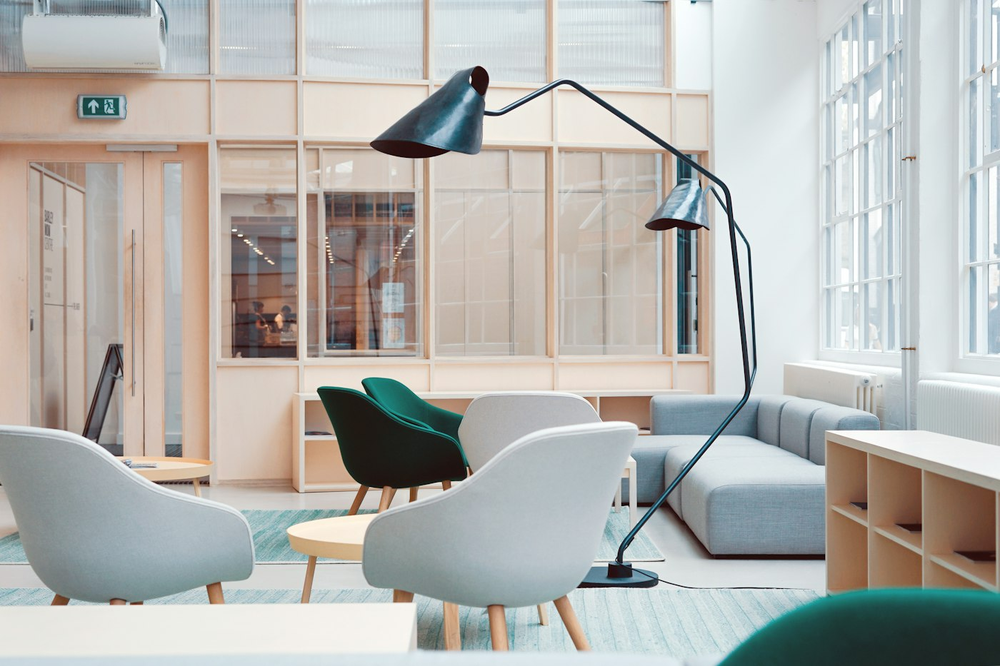

Zakelijk bij Smaak & Stijl
Even weg van het kantoor: lunchen, vergaderen, borrelen of een bedrijfsfeest in een paviljoen omringd door weiland. Wij maken van ieder zakelijk moment iets bijzonders.

Vergaderen
Een vergaderlocatie waar rust, comfort en bereikbaarheid samenkomen. De ideale plek om met je team te overleggen, te brainstormen of plannen te maken.
Binnen wacht je een warme ontvangst met koffie van vers gemalen bonen, diverse soorten thee en iets lekkers naar keuze: van appeltaart met slagroom tot cheesecake of seizoensgebak.
Drie ruimtes, elk met een eigen karakter
- De Huiskamer: een intieme, huiselijke ruimte voor kleinere groepen.
- De Lounge: ideaal voor informele meetings, teambuilding, brainstormsessies of creatieve workshops.
- Het Paviljoen: een lichte, open ruimte met uitzicht over het weiland, voor presentaties of teamdagen.
Faciliteiten
- TV-scherm voor presentaties
- Flipovers en stiften
- Haspels
- Microfoon en geluidsapparatuur
- Wifi
Tussen de sessies door kun je letterlijk even de natuur in: een wandeling door het park of over het aangrenzende weiland zorgt voor een frisse blik en nieuwe energie. Goed bereikbaar met OV en auto, met voldoende gratis parkeergelegenheid.
Teamdag, strategiesessie of klantbijeenkomst: wij regelen alles tot in de puntjes, zodat jullie je volledig op de inhoud kunnen richten.
Bedrijfsfeest & evenementen
Bedrijfsborrel, teamuitje, productpresentatie of personeelsfeest: een professionele, maar ontspannen beleving.
Onze ruimtes
- Loungegedeelte van het paviljoen: informele borrels of recepties.
- Het gehele paviljoen: ruim en sfeervol, voor diners, feesten of presentaties.
- De Huiskamer: warm en exclusief, voor private dining, vergaderlunches of creatieve sessies tot 35 personen.
Wat we bieden
- Lunch- en dinerbuffetten met warme en koude gerechten
- Borrelarrangementen met hapjes en dranken op maat
- BBQ- of walking-dinerconcepten voor een informele setting
- 3-gangen keuzemenu's, afgestemd op jullie wensen
- Avondfeestarrangementen met eigen huis-DJ en stylingmogelijkheden
Voor groepen is het mogelijk om buiten de reguliere openingstijden gebruik te maken van onze locatie. Van sfeervolle aankleding tot smaakvolle invulling: jij en je gasten worden volledig ontzorgd.
Zakelijk lunchen
Even een pauze van het kantoor? Ontsnap samen met je collega's aan het kantoorleven, in een paviljoen omringd door weiland.
Van heerlijk belegde broodjes en huisgemaakte soepen tot frisse salades, alles met liefde en passie bereid. Voor groepen zijn er luncharrangementen en -buffetten: perfect voor teambuilding, bijeenkomsten, meetings of netwerklunches.
Zakelijk borrelen
Een borrel na de vergadering, het afscheid van een collega, een jubileum of een ontspannen netwerkbijeenkomst.
Wij zorgen voor de juiste sfeer, smaak en service, met lekkere hapjes, wijnen, speciaalbieren of cocktails. Voor groepen openen we graag onze deuren, ook buiten de reguliere openingstijden, en we denken mee over een borrelarrangement dat aansluit bij jullie wensen.
Vrijblijvend voorstel of rondleiding?
Vertel ons wat je in gedachten hebt, dan denken we graag mee.